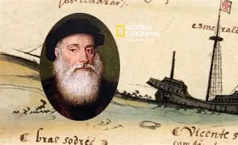

การสำรวจทะเลในศตวรรษที่ 20 เป็นช่วงที่มีการพัฒนาเทคโนโลยีการสำรวจทะเลอย่างก้าวกระโดด โดยเฉพาะการใช้เรือดำน้ำ, หุ่นยนต์ใต้น้ำ, และอุปกรณ์สำรวจที่ช่วยให้สามารถเข้าถึงพื้นที่ลึกของทะเลได้อย่างมีประสิทธิภาพมากขึ้น นอกจากนี้ยังเป็นยุคที่มีการศึกษาทะเลและโลกใต้ทะเลในเชิงวิทยาศาสตร์และการอนุรักษ์มากขึ้น
